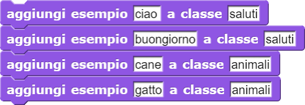
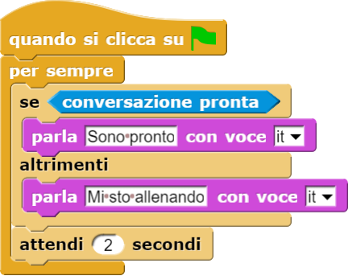
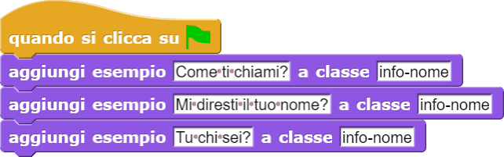
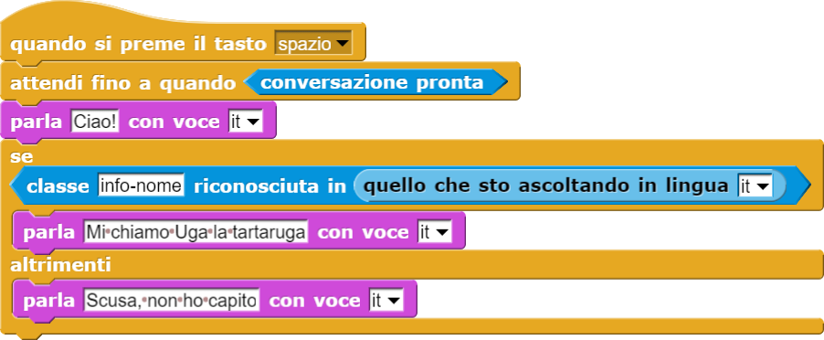
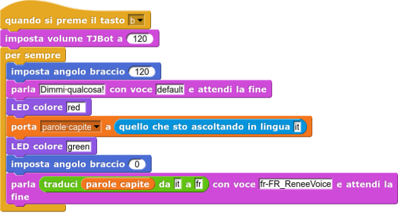
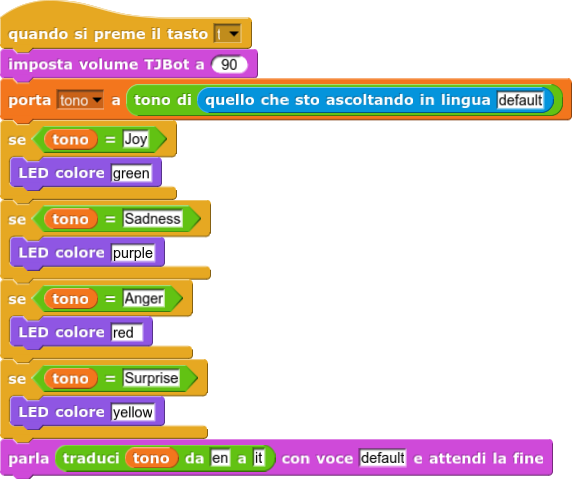
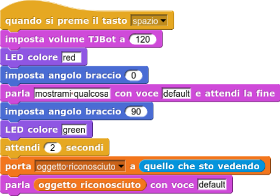

Imposta il servo motore del braccio all'angolo specificato dal parametro numerico.
SNAP! for TJBot documentation
Imposta il servo motore del braccio all'angolo specificato dal parametro numerico.

Questo script di esempio dice al TJBot di muovere il braccio in alto e in basso per 5 volte, come se stesse
salutando
qualcuno.

Accende il LED sulla testa del TJBot del colore specificato. Il parametro deve essere testuale e scritto in
inglese
(esempi: "green", "red", "blue", "yellow"). Il colore "black" causa lo spegnimento del LED.

In questo esempio, il LED si accende ripetutamente di un colore scelto a caso tra una lista di colori.

Le "classi" della conversation sono insiemi di parole o frasi che si riferiscono ad una medesima intenzione
comunicativa
(ad esempio "ciao", "buongiorno" e "buonasera" sono tutti modi per salutare). Con questo blocco è possibile
aggiungere
un esempio di parola o frase ad una classe.
Una volta aggiunto un esempio ad una classe, il servizio Watson Assistant ha bisogno di un po' di tempo per
"allenarsi".
Questo blocco ci dice se la conversazione è pronta o meno ad essere utilizzata restituendoci VERO o FALSO.

In questo esempio all'interno di un ciclo infinito "per sempre" viene ripetuto un controllo per cui se la
conversazione
risulta pronta il computer mi dice che è pronto, altrimenti mi dice che si sta allenando. Attende 2 secondi
prima
di controllare nuovamente. Il blocco "conversazione pronta" rappresenta quindi la "condizione" da mettere
all'interno
del blocco "se... allora... altrimenti...".
Questo blocco ci dice VERO o FALSO a seconda che la parola o frase scritta nel secondo parametro (es.
"buongiorno")
venga riconosciuta dal Watson Assistant all'interno dell'insieme di parole o frasi (ovvero la "classe"
precedentemente
definita, nel nostro esempio "saluti") indicato nel primo parametro.


In questo esempio viene inizialmente allenato il computer a riconoscere una classe chiamata "info-nome" con
una
serie di frasi di esempio che rappresentano modi in cui è possibile chiedere il nome ad un interlocutore.
Successivamente, premendo la barra spaziatrice sulla tastiera, il programma resta in attesa che la
conversazione
sia pronta. Solo in quel caso il programma procederà ad eseguire le istruzioni successive e dirà "Ciao!".
A quel punto rimarrà in ascolto per il riconoscimento vocale (il blocco "quello che sto ascoltando"). Se
riconosce
le parole capite come una frase appartenente alla classe "info-nome" allora risponde vocalmente dicendo il
proprio
nome, altrimenti comunica di non aver capito.
Permette di azzerare tutte le classi e gli esempi creati.
ATTENZIONE: tutto il lavoro di addestramento del Watson Assistant precedentemente fatto verrà annullato.

Invia una parola o frase, scritta come primo parametro (nel primo spazio vuoto), allo spazio di lavoro
(workspace)
il cui codice identificativo va copiato e incollato come secondo parametro. Questo blocchetto restituisce quindi
la risposta elaborata dal Watson Assistant.
N.B. Il workspace deve appartenere al servizio le cui credenziali sono state inserite nei "settings" del
TJBot,
nel campo della Conversation (o Watson Assistant).

In questo modo viene "chiesto" all'utente di inserire una frase su SNAP, la "risposta" dell'utente viene
inviata
alla conversazione di Watson, infine (grazie al blocchetto "dire") la sprite mostrerà un fumetto con la risposta
ricevuta da Watson. Poi tutto si ripete.

Invia una parola o frase (primo parametro) al servizio di sintesi vocale di Watson, utilizzando la voce
indicata
nel secondo parametro.

La voce default rappresenta la voce selezionata nei "settings" del TJBot. La voce deve essere scritta in
questo
formato: it-IT_FrancescaVoice, fr-FR_ReneeVoice e così via. Le voci disponibili sono elencate nella pagina dei
"settings".

Versione "microfono-browser":
questa modalità utilizza il riconoscimento vocale del browser web chromium, per tanto necessita di un tjbot
connesso allo schermo (e non remoto) e di consentire al browser l'accesso al microfono (quando lo chiederà).
ATTENZIONE: assicurarsi di aver selezionato il giusto microfono di input dall'icona a forma di telecamera
nella parte desta della barra superiore del browser.
Versione microfono tjbot:
questa modalità registra i suoni fino a che non percepisce 2 secondi di silenzio. Successivamente invia l'audio al servizio
di Speech to Text di Watson e attende la risposta. La registrazione viene analizzata sulla base della lingua
specificata nel parametro (ad esempio: "it" per italiano, "fr" per francese, "en" per inglese, "es" per spagnolo, e così
via). Il parametro "default" sta ad indicare la lingua della voce selezionata nella pagina dei "settings" del TJBot.
Infine, il blocchetto restituisce una parola o frase di testo scritto corrispondente a ciò che Watson è riuscito a
riconoscere nei suoni registrati.

In questo esempio, il TJBot incita a dire qualcosa, poi registra la voce e salva le parole comprese in una
variabile
precedentemente creata. Infine il TJBot parla dicendo l'unione della frase "Ho capito..." e delle parole capite.
Scatta una foto e la invia al servizio di Visual Recognition di Watson. Questa foto viene analizzata in
base al
"classificatore di default", ovvero secondo quello che Watson già conosce, senza bisogno che sia allenato in
maniera
specifica. Una volta ricevuta la risposta da Watson, questo blocco restituisce una o più parole corrispondenti
alla
descrizione dell'oggetto più saliente tra quelli riconosciuti nella foto.
Scatta una foto e la invia al servizio di Visual Recognition. La foto viene analizzata sulla base del
classificatore
personalizzato addestrato dall'utente. Il codice del classificatore va indicato nel primo parametro. La soglia
(secondo
parametro) è invece un numero decimale compreso tra 0 e 1 che serve ad indicare con quale livello di "certezza"
che
Watson deve avere nel riconscimento di un oggetto affinché possa dare una risposta. Una soglia più alta fa sì
che
Watson fornisca risposte più attendibili, ma aumenta la probabilità che non abbia nessuna risposta da dare,
oppure
che abbia solamente risposte molto generiche. Una soglia più bassa garantisce risposte molto specifiche,
tuttavia
aumenta la probabilità degli errori.
Restituisce la traduzione della parola o frase scritta come primo parametro. Nel secondo parametro deve
essere specificata
la lingua di origine e nel terzo parametro la lingua di destinazione ("it", "fr, "es" e così via).
Questo blocco prende come parametro una parola o frase e la invia al servizio di Tone Analyzer di Watson.
Quando
riceve la risposta, restituisce una parola inglese che si riferisce alla emozione che con maggiore probabilità
ha
rilevato all'interno della frase inviata ("Joy", "Sadness", "Anger", "Surprise").

In questo esempio il TJBot si comporta come un interprete: prima registra le parole o le frasi pronunciate
a voce
e le trasforma in testo scritto, poi le traduce in una lingua diversa e le pronuncia grazie al Text to Speech
(blocco
"parla").

Il TJBot registra la voce, la traduce in testo e la analizza con il Tone Analyzer di Watson.
Successivamente accende
il LED sopra alla testa di un colore diverso in base alla emozione percepita.

Il TJBot invita a mostrargli qualcosa, aspetta un po', scatta una foto e la analizza con il servizio di
Visual Recognition
di Watson. Poi sintetizza vocalmente la descrizione dell'oggetto riconosciuto e la riproduce.